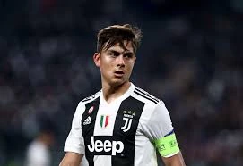

Es un futbolista profesional desde su debut en 2011 con Instituto de Córdoba (Argentina), donde rompió récords de juventud y goles. Después de pasar por el Palermo, fue transferido a la Juventus en 2015, ganando múltiples títulos de Serie A y Coppa Italia. Actualmente juega para la A.S. Roma y es un jugador clave de la Selección Argentina, donde fue campeón del mundo.
Los primeros años de la carrera de Dybala estuvieron marcados por su explosión en el fútbol argentino con el Instituto de Córdoba (2011-2012), donde rompió récords y atrajo la atención internacional. Luego, fichó por el Palermo de Italia (2012-2015), consolidándose en la Serie A y dando el salto definitivo a la Juventus en 2015, consolidando su posición como una estrella mundial.
Paulo Dybala siempre fue un apasionado por el fútbol desde niño, influenciado por su familia y su talento natural, lo que lo llevó a convertirse en profesional. Su sueño era jugar para la selección argentina.
Si deseas saber más de Dybala, puedes visitar las siguientes fuentes: